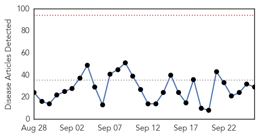

MERS
30-Day Web Trend
0 alerts, 0 warnings

30-Day Twitter Trend
0 alerts, 0 warnings

Article Locations

Article Confidences

Top Articles:
Top Tweets:
-
No tweets found for Sep 26, 2015
Ebola
30-Day Web Trend
0 alerts, 0 warnings

30-Day Twitter Trend
0 alerts, 0 warnings

Article Locations


Article Confidences
Top Articles:
- 0.999
- Rwanda’s Suspected Ebola Patient Tests Negative
- 0.996
- Airport Screening 'Doesn't Really Pick Up Ebola'
- 0.990
- In the Fight Against Ebola, High-Tech Microchip is the Ultimate Cure
- 0.988
- Teen wins science fair with rapid, portable Ebola test
- 0.984
- Use of Ebola Survivors’ Blood To Cure Infected Patients
- 0.961
- Kenya Airways resumes West Africa flights
- 0.952
- INTERVIEW-Liberia struggles to regain economic footing after Ebola
- 0.942
- Kenya Airways resumes West Africa flights banned due to Ebola
- 0.939
- ‘Human security depends on health security,’ Ban says, calling on nations to be proactive
- 0.934
- Legislature Bans Hunting, for Now…
- 0.933
- Study: Chip test directly identifies Ebola virus
- 0.838
- New global drive to step up healthcare delivery
- 0.814
- Polio is gone from Nigeria, WHO says
- 0.786
- New partnership to help countries close gaps in primary health care
- 0.775
- How Surgery Can Fight Global Poverty
- 0.727
- WHO Takes Nigeria Off Global List Of Polio-Endemic Countries
- 0.725
- S. Africa to co-host China-Africa health forum
- 0.722
- Protecting Apes Could Backfire
- 0.713
- S. Africa to co-host China-Africa health forum - Xinhua
- 0.710
- WHO takes Nigeria off global list of polio-endemic countries
- 0.707
- WHO takes Nigeria off global list of polio-endemic countries
- 0.701
- WHO takes Nigeria off global list of polio-endemic countries, World News & Top Stories
- 0.698
- WHO takes Nigeria off global list of polio-endemic countries
- 0.677
- Nigeria taken off list of polio-endemic countries
- 0.654
- World Health Organization takes Nigeria off global list of polio-endemic countries
- 0.622
- WHO cuts Nigeria from polio list
- 0.609
- US partners FG on enhancing health emergency response
- 0.545
- THE WOMAN DR. ADADEVOH!E24-7 Magazine
- 0.510
- LIBERIA: Red Cross Reports Drop In Ebola Death Rate
Top Tweets:
- 0.883
- Study: Chip test directly identifies Ebola virus - CIDRAP http://t.co/AvP3zjtajS ebola EVD
- 0.802
- Dr Chan: Ebola made people realise the importance of people—centred resilient health systems to deliver on all health needs GlobalGoals
- 0.765
- Securing Europe's health: Ebola scourge leaves lasting questions - Politico http://t.co/guEW6muvXR ebola EVD
- 0.765
- RT: Dr Chan: Ebola made people realise the importance of people—centred resilient health systems to deliver on all health needs Glo…
- 0.698
- Shelley making progress on Ebola in Africa with CDC - Kokomo Tribune http://t.co/8s6w0gmz2Q ebola EVD
- 0.614
- American doctor cured of Ebola continues his work in Liberia - Lowell Sun http://t.co/dFN53no5MI ebola EVD
- 0.595
- Teen Wins Science Fair With Rapid Portable Ebola Test - Dallas Morning News (blog) http://t.co/0m1Yc73nkO ebola EVD
- 0.530
- Seattle is hub of innovation in combating infectious diseases like Ebola - The Seattle Times http://t.co/1jwBpGR2Ed ebola EVD
- 0.504
- No Ebola found in year of screening at O'Hare other airports - Chicago Sun-Times http://t.co/cWoYh2H0hq ebola EVD